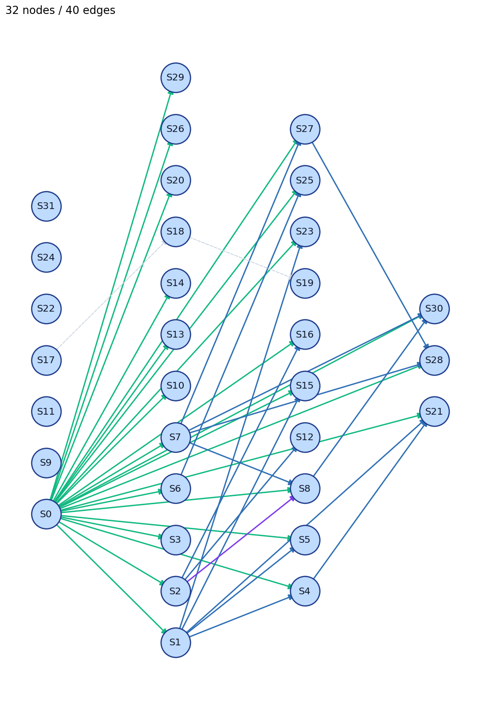

QuestionGretchen has 110 coins. There are 30 more gold coins than silver coins. How many gold coins does Gretchen have?
Gold70
Pred70
DAG32 nodes / 40 edges
claim_ref: 1expr_ref: 15order: 2var_ref: 22
response (truncated)
First, I'll define the variables. Let G represent the number of gold coins and S represent the number of silver coins. According to the problem, Gretchen has a total of 110 coins, so G + S = 110. It's also given that there are 30 more gold coins than silver coins, which means G = S + 30. Substituting the second equation into the first, we get (S + 30) + S = 110. Combining like terms, this simplifies to 2S + 30 = 110. Subtracting 30 from both sides gives 2S = 80. Dividing both sides by 2, we find S = 40. Finally, substituting S back into G = S + 30, we get G = 40 + 30 = 70. Therefore, Gretchen has 70 gold coins. </think> Let's solve the problem step by step. **Given:** - Total number of coins Gretchen has: 110 - Number of gold coins is 30 more than the number of silver coins. **Let:** - \( G \) = Number of gold coins - \( S \) = Number of silver coins **We have two equations based on the given information:** 1. \( G + S = 110 \) (Total coins) 2. \( G = S + 30 \) (Gold coins are 30 more than silver coins) **Step 1:** Substitute the second equation into the first equation. \[ (S + 30) + S = 110 \] **Step 2:** Combine like terms. \[ 2S + 30 = 110 \] **Step 3:** Subtract 30 from both sides. \[ 2S = 80 \] **Step 4:** Divide both sides by 2 to find \( S \). \[ S = 40 \] **Step 5:** Substitute \( S = 40 \) back into the second equation to find \( G \). \[ G = 40 +…

Nodes & edges
Nodes
| step | type | verdict | exprs | claims | raw_text |
|---|---|---|---|---|---|
| 0 | unknown | correct | I'll define the variables. Let G represent the number of gold coins and S represent the number of silver coins. | ||
| 1 | computation | correct | g+s=110, 110 | g + s = 110. | G + S = 110. |
| 2 | definition | correct | whichmeansg=s+30, 30_more | it's also given that there are 30 more gold coins than silver coins, which means g = s + 30. | It's also given that there are 30 more gold coins than silver coins, which means G = S + 30. |
| 3 | unknown | correct | substituting the second equation into the first, we get (s + | Substituting the second equation into the first, we get (S + | |
| 4 | computation | correct | s=110, 110 | + s = 110. | + S = 110. |
| 5 | computation | correct | thissimplifiesto2s+30=110, 110 | combining like terms, this simplifies to 2s + 30 = 110. | Combining like terms, this simplifies to 2S + 30 = 110. |
| 6 | computation | correct | subtracting30frombothsidesgives2s=80, 80 | subtracting 30 from both sides gives 2s = 80. | Subtracting 30 from both sides gives 2S = 80. |
| 7 | computation | correct | wefinds=40, 40 | dividing both sides by 2, we find s = 40. | Dividing both sides by 2, we find S = 40. |
| 8 | computation | correct | substitutingsbackintog=s+30, wegetg=40+30, 40, 70 | substituting s back into g = s + 30, we get g = 40 + 30 = 70. | substituting S back into G = S + 30, we get G = 40 + 30 = 70. |
| 9 | unknown | correct | 70_gold | Gretchen has 70 gold coins. | |
| 10 | unknown | correct | Let's solve the problem step by step. | ||
| 11 | unknown | unverifiable | Total number of coins Gretchen has: 110 | ||
| 12 | unknown | correct | 30_more | Number of gold coins is 30 more than the number of silver coins. | |
| 13 | computation | correct | \( g \) = number of gold coins | \( G \) = Number of gold coins | |
| 14 | computation | correct | \( s \) = number of silver coins | \( S \) = Number of silver coins | |
| 15 | computation | correct | g+s=110, 110 | \( g + s = 110 \) (total coins) | 1. \( G + S = 110 \) (Total coins) |
| 16 | computation | correct | g=s+30, 30_more | \( g = s + 30 \) (gold coins are 30 more than silver coins) | 2. \( G = S + 30 \) (Gold coins are 30 more than silver coins) |
| 17 | unknown | unverifiable | **Step 1:** Substitute the | ||
| 18 | unknown | unverifiable | second equation into the | ||
| 19 | unknown | unverifiable | first equation. | ||
| 20 | unknown | correct | (S + | ||
| 21 | computation | correct | s=110, 110 | + s = 110 | + S = 110 |
| 22 | unknown | unverifiable | **Step 2:** Combine like terms. | ||
| 23 | computation | correct | 2s+30=110, 110 | 2s + 30 = 110 | 2S + 30 = 110 |
| 24 | unknown | unverifiable | **Step 3:** Subtract 30 from both sides. | ||
| 25 | computation | correct | 2s=80, 80 | 2s = 80 | 2S = 80 |
| 26 | unknown | correct | **Step 4:** Divide both sides by 2 to find \( S \). | ||
| 27 | computation | correct | s=40, 40 | s = 40 | S = 40 |
| 28 | computation | correct | s=40, 40 | **step 5:** substitute \( s = 40 \) back into the | **Step 5:** Substitute \( S = 40 \) back into the |
| 29 | unknown | correct | second equation to find \( G \). | ||
| 30 | computation | correct | g=40+30, 40, 70 | g = 40 + 30 = 70 | G = 40 + 30 = 70 |
| 31 | conclusion | incorrect | Gretchen has \(\boxed{70}\) gold coins. |
Edges
| src | tgt | edge_type | dep_type | source_kind | weight | evidence |
|---|---|---|---|---|---|---|
| 0 | 1 | virtual_edge | var_ref | rule | 1.00 | var=g |
| 0 | 2 | virtual_edge | var_ref | rule | 1.00 | var=g |
| 0 | 3 | virtual_edge | var_ref | rule | 1.00 | var=s |
| 0 | 4 | virtual_edge | var_ref | rule | 1.00 | var=s |
| 0 | 5 | virtual_edge | var_ref | rule | 1.00 | var=s |
| 0 | 6 | virtual_edge | var_ref | rule | 1.00 | var=s |
| 0 | 7 | virtual_edge | var_ref | rule | 1.00 | var=s |
| 0 | 8 | virtual_edge | var_ref | rule | 1.00 | var=g |
| 0 | 10 | virtual_edge | var_ref | rule | 1.00 | var=s |
| 0 | 13 | virtual_edge | var_ref | rule | 1.00 | var=g |
| 0 | 14 | virtual_edge | var_ref | rule | 1.00 | var=s |
| 0 | 15 | virtual_edge | var_ref | rule | 1.00 | var=g |
| 0 | 16 | virtual_edge | var_ref | rule | 1.00 | var=g |
| 0 | 20 | virtual_edge | var_ref | rule | 1.00 | var=s |
| 0 | 21 | virtual_edge | var_ref | rule | 1.00 | var=s |
| 0 | 23 | virtual_edge | var_ref | rule | 1.00 | var=s |
| 0 | 25 | virtual_edge | var_ref | rule | 1.00 | var=s |
| 0 | 26 | virtual_edge | var_ref | rule | 1.00 | var=s |
| 0 | 27 | virtual_edge | var_ref | rule | 1.00 | var=s |
| 0 | 28 | virtual_edge | var_ref | rule | 1.00 | var=s |
| 0 | 29 | virtual_edge | var_ref | rule | 1.00 | var=g |
| 0 | 30 | virtual_edge | var_ref | rule | 1.00 | var=g |
| 1 | 4 | virtual_edge | expr_ref | rule | 1.00 | expr=110 |
| 1 | 5 | virtual_edge | expr_ref | rule | 1.00 | expr=110 |
| 1 | 15 | virtual_edge | expr_ref | rule | 1.00 | expr=g+s=110 |
| 1 | 21 | virtual_edge | expr_ref | rule | 1.00 | expr=110 |
| 1 | 23 | virtual_edge | expr_ref | rule | 1.00 | expr=110 |
| 2 | 8 | virtual_edge | claim_ref | rule | 1.00 | claim=g=s |
| 2 | 12 | virtual_edge | expr_ref | rule | 1.00 | expr=30_more |
| 2 | 16 | virtual_edge | expr_ref | rule | 1.00 | expr=30_more |
| 4 | 21 | virtual_edge | expr_ref | rule | 1.00 | expr=s=110 |
| 6 | 25 | virtual_edge | expr_ref | rule | 1.00 | expr=80 |
| 7 | 8 | virtual_edge | expr_ref | rule | 1.00 | expr=40 |
| 7 | 27 | virtual_edge | expr_ref | rule | 1.00 | expr=40 |
| 7 | 28 | virtual_edge | expr_ref | rule | 1.00 | expr=40 |
| 7 | 30 | virtual_edge | expr_ref | rule | 1.00 | expr=40 |
| 8 | 30 | virtual_edge | expr_ref | rule | 1.00 | expr=70 |
| 17 | 18 | solid_edge | order | rule | 0.30 | |
| 18 | 19 | solid_edge | order | rule | 0.30 | |
| 27 | 28 | virtual_edge | expr_ref | rule | 1.00 | expr=s=40 |